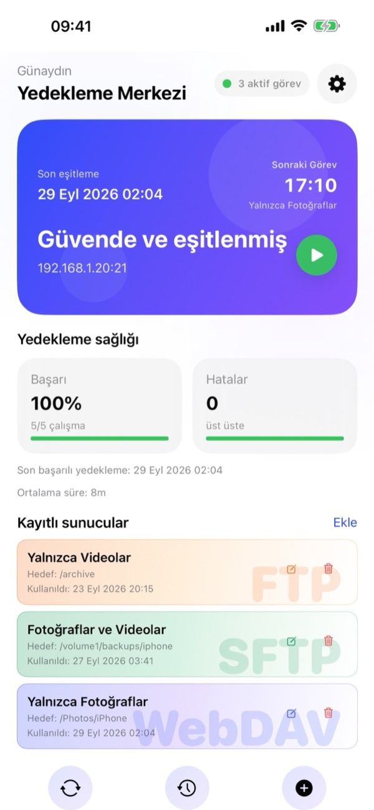
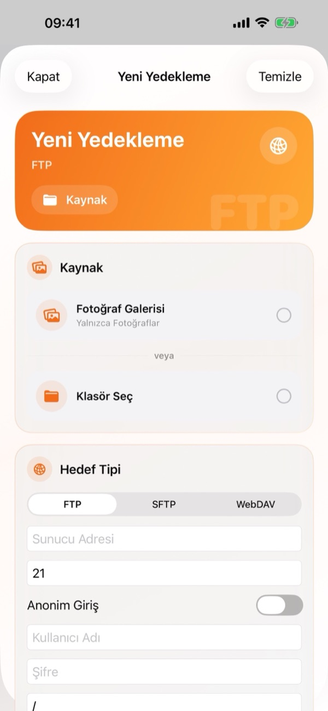
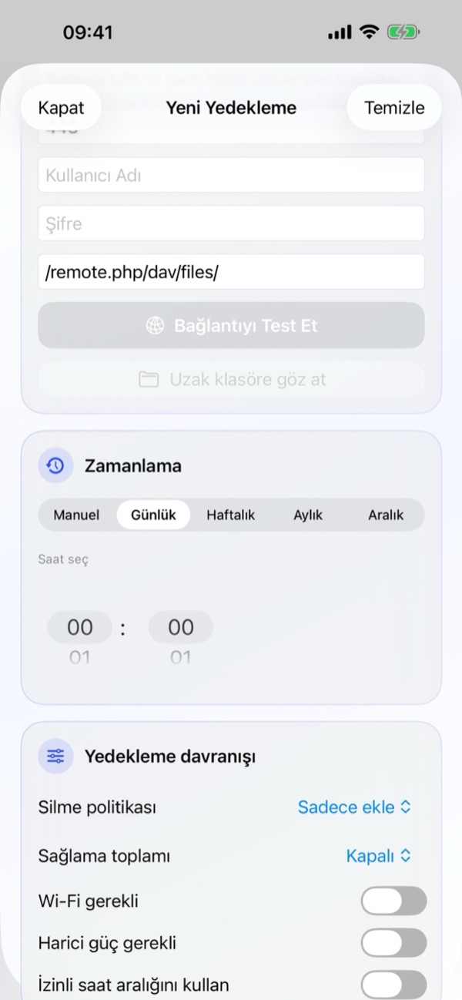
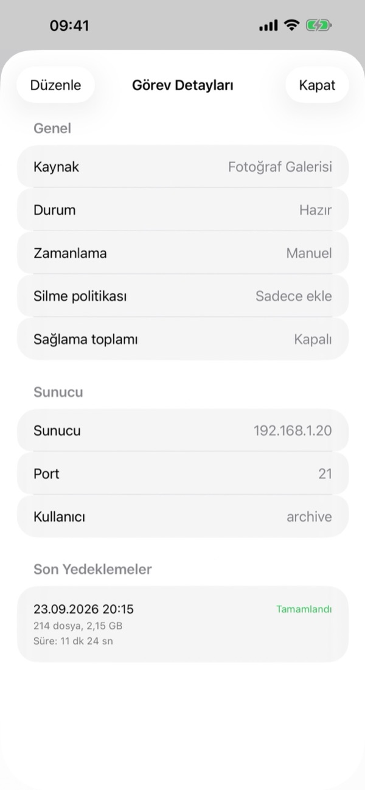
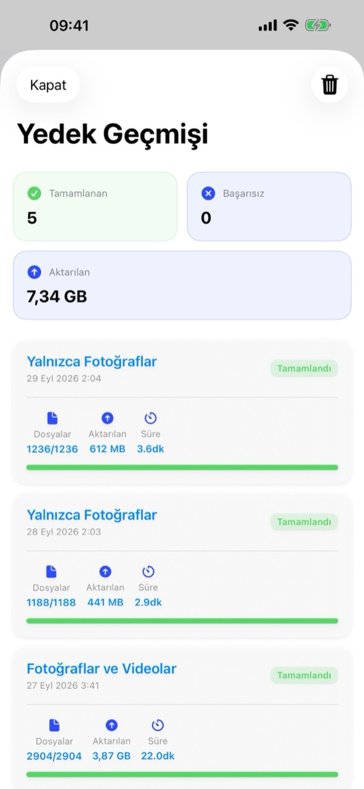
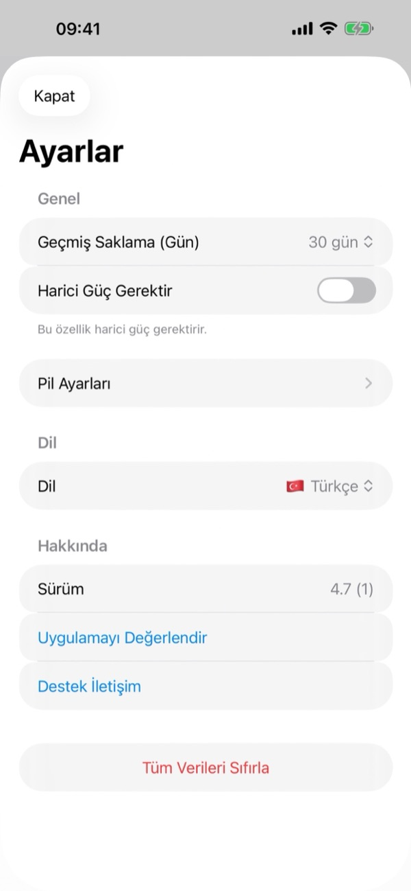

1. Neye ihtiyacınız var?
- Uyumlu bir sunucu: FTP, SFTP (SSH) veya WebDAV (HTTP/HTTPS) destekleyen herhangi bir NAS cihazı (Synology, QNAP, TrueNAS, Unraid), ev sunucusu (Linux, macOS, Windows, Raspberry Pi) veya kişisel bulut (Nextcloud, ownCloud, WebDAV depolama).
- Bağlantı bilgileri: Sunucu adresiniz (IP, alan adı veya tam WebDAV URL'si), port numarası (varsayılan: FTP 21, SFTP 22, WebDAV 443 veya 80) ve giriş bilgileriniz (Kullanıcı Adı ve Şifre ya da FTP için Anonim Giriş).
- iOS izinleri:
- Fotoğraflar: Fotoğraf ve videoları yedeklemek için tam galeri erişimine izin verin.
- Yerel Ağ: Sunucunuz ev/ofis Wi-Fi ağınızdaysa iOS yerel ağ erişimi istediğinde İzin Ver'e dokunun.
- Bildirimler: Zamanlanmış yedeklemeler başladığında veya tamamlandığında haberdar olmak için bildirimlere izin verin.
2. Yedekleme Merkezi genel bakış
BackupFlow'u açtığınızda karşınıza çıkan Yedekleme Merkezi, yedekleme sisteminizin anlık durumunu tek ekranda sunar:
- Durum Kartı: Son eşitleme zamanını, Sonraki Görev saatini ve adını, genel koruma durumunuzu (Güvende ve eşitlenmiş), aktif sunucu adresini ve yedeği anında başlatmak için yeşil Oynat (▶) butonunu gösterir.
- Yedekleme sağlığı: Başarı oranınızı (yüzde ve toplam çalışma sayısı), üst üste oluşan Hatalar sayısını, son başarılı yedekleme tarihini ve Ortalama süre bilgisini takip eder.
- Kayıtlı sunucular: Yapılandırdığınız tüm FTP, SFTP ve WebDAV görevlerini hedef klasör ve son kullanım tarihiyle birlikte renkli kartlar halinde listeler. Görevi düzenlemek için Düzenle (✏️) simgesine, silmek için Sil (🗑️) simgesine, detayları görmek içinse kartın üzerine dokunabilirsiniz.
- Alt Menü ve Ayarlar: Ekranın altındaki üç yuvarlak buton ile Eşitle/Çalıştır (🔄) işlemini başlatabilir, Yedek Geçmişi (🕒) ekranını açabilir veya Yeni Yedekleme (+) oluşturabilirsiniz. Sağ üstteki dişli çark (⚙️) simgesi ise Ayarlar ekranını açar.

3. Yeni yedekleme oluşturma
Yedekleme Merkezi'nin altındaki + butonuna (veya Kayıtlı sunucular yanındaki Ekle'ye) dokunarak Yeni Yedekleme ekranını açın:
- Kaynak:
- iOS Fotoğraflar uygulamasındaki medyaları yedeklemek için Fotoğraf Galerisi'ni seçin (Yalnızca Fotoğraflar, Yalnızca Videolar veya Fotoğraflar ve Videolar), ya da
- iOS Dosyalar uygulamasındaki herhangi bir klasörü yedeklemek için Klasör Seç'e dokunun.
- Hedef Tipi:
- Üstteki sekmeden FTP, SFTP veya WebDAV protokolünü seçin.
- Sunucu Adresi (WebDAV için tam URL) ve Port bilgisini girin (FTP: 21, SFTP: 22, WebDAV: 443/80).
- Kullanıcı Adı ve Şifre bilgilerinizi yazın (FTP sunucunuz destekliyorsa Anonim Giriş seçeneğini de açabilirsiniz).
- Sunucu üzerindeki hedef klasör yolunu girin (ör.
/archiveveya Nextcloud için/remote.php/dav/files/kullanici/). - Bilgileri doğrulamak için Bağlantıyı Test Et'e dokunun; dilerseniz Uzak klasöre göz at butonuna dokunarak sunucudaki klasörü doğrudan seçin.
- Zamanlama: Görevin çalışma sıklığını seçin (Manuel, Günlük, Haftalık, Aylık veya Aralık) ve Saat seç kısmından saati belirleyin.
- Yedekleme davranışı: Silme politikası, Sağlama toplamı ve çalışma koşullarını ayarlayıp görevi kaydedin.
İlk tam yedeklemeden sonra BackupFlow yalnızca yeni eklenen veya değişen dosyaları aktarır; böylece sonraki yedeklemeler çok kısa sürede tamamlanır.


4. Görev Detayları ve yönetim
Yedekleme Merkezi'nde Kayıtlı sunucular altındaki herhangi bir göreve dokunduğunuzda Görev Detayları ekranı açılır:
- Genel: Görevin Kaynak bilgisini, güncel Durum (ör. Hazır), Zamanlama, Silme politikası ve Sağlama toplamı ayarlarını görüntüler.
- Sunucu: Bağlı olunan Sunucu adresini, Port numarasını ve Kullanıcı adını gösterir.
- Son Yedeklemeler: Bu göreve ait son yedekleme çalışmalarını tarih/saat, durum (Tamamlandı), aktarılan dosya sayısı, boyut ve süre bilgileriyle listeler.
- Görevi güncellemek için sol üstteki Düzenle butonuna, çıkmak için sağ üstteki Kapat butonuna dokunun.

5. Zamanlama ve çalışma koşulları
Görev oluştururken veya düzenlerken Zamanlama bölümünde beş seçenek bulunur:
- Manuel: Yalnızca siz başlattığınızda çalışır.
- Günlük: Her gün Saat seç alanında belirlediğiniz saat ve dakikada çalışır.
- Haftalık: Haftada bir kez belirlediğiniz gün ve saatte çalışır.
- Aylık: Ayda bir kez otomatik çalışır.
- Aralık: Belirlediğiniz saat aralığında periyodik olarak tekrarlanır.
Yedekleme davranışı altında otomatik yedeklemenin hangi koşullarda çalışacağını sınırlandırabilirsiniz:
- Wi-Fi gerekli: Hücresel/mobil verinin kullanılmasını tamamen engeller.
- Harici güç gerekli: Yalnızca iPhone şarja takılıyken yedekleme yapar.
- İzinli saat aralığını kullan: Otomatik yedeklemeyi yalnızca belirlediğiniz saat diliminde (örneğin gece saatlerinde) çalıştırır.
- Minimum Pil Seviyesi (Ayarlar › Pil Ayarları): Pil seviyesi belirlediğiniz eşiğin altındaysa yedeklemeyi erteleyerek pilinizi korur.
6. Silme politikası, Sağlama toplamı ve iCloud
Yedekleme davranışı bölümünde iPhone'unuzdan sildiğiniz dosyaların sunucuda nasıl işleneceğini ve dosya doğrulamasını seçebilirsiniz:
- Silme politikası › Sadece ekle
- Sunucuya yalnızca yeni ve güncel dosyalar eklenir; sunucudan hiçbir dosya silinmez. Yedekleme sonrası iPhone'unuzda yer açmak için fotoğraf/video silmeyi planlıyorsanız kesinlikle bu modu kullanın.
- Silme politikası › Ayna
- Sunucudaki klasörü iPhone'daki kaynağın birebir kopyası tutar. iPhone'dan sildiğiniz dosyalar bir sonraki eşitlemede sunucudan da silinir.
- Silme politikası › Arşivli silme
- Hiçbir dosya kalıcı olarak silinmez. iPhone'dan kaldırılan dosyalar sunucuda tarihli .backupflow_archive klasörüne taşınır.
- Sağlama toplamı (Checksum)
- Açık olduğunda, yüklenen her dosyanın sunucuya bozulmadan ve eksiksiz ulaştığını doğrular. Maksimum hız için Kapalı tutabilirsiniz.
Önemli ipucu: iCloud Fotoğrafları ve "iPhone'da En İyi Saklama" kullanıyorsanız, yalnızca iCloud'da bulunan orijinal fotoğraf ve videoların da yedeklenmesi için kaynak ayarlarında Gerekirse iCloud öğelerini indir seçeneğini etkinleştirin.
7. Arka planda yedekleme
BackupFlow, zamanlanmış görevleri çalıştırmak için iOS BGTaskScheduler altyapısını kullanır. iOS arka plan çalışma zamanlarını pil durumu, şarj ve cihaz kullanım alışkanlıklarına göre yönettiği için zamanlanmış yedekler seçilen dakikadan biraz sonra başlayabilir.
- Zamanı geldiğinde BackupFlow yedeği arka planda başlatır veya tek dokunuşla başlatabilmeniz için bir bildirim gönderir.
- iOS arka plan aktarımını bitmeden duraklatırsa uygulamayı açmanız yeterlidir; yedekleme kaldığı yerden devam eder ve daha önce aktarılan dosyalar tekrar gönderilmez.
- İlk yedekleme için öneri: Çok sayıda fotoğraf veya büyük videolar içeren ilk tam yedeklemede iPhone'unuzu Wi-Fi'a ve şarja bağlı tutarak uygulamayı açık bırakmanız önerilir.
8. Yedek Geçmişi
Yedekleme Merkezi'nin alt barındaki ortada bulunan Geçmiş (🕒) butonuna dokunarak Yedek Geçmişi ekranını açabilirsiniz:
- Özet Kartları: Üst kısımda toplam Tamamlanan, Başarısız görev sayılarını ve bugüne kadar toplam Aktarılan veri miktarını (MB/GB) görebilirsiniz.
- Detaylı Kayıtlar: Her yedekleme kartında görev adı, tarih ve saat, durum etiketi (Tamamlandı), Dosyalar (ör.
1236/1236), Aktarılan boyut ve Süre yer alır. - Geçmişi Temizleme: Sağ üstteki çöp kutusu (🗑️) simgesine dokunarak geçmiş kayıtlarını temizleyebilirsiniz.

9. Uygulama Ayarları
Yedekleme Merkezi'nin sağ üst köşesindeki dişli çark (⚙️) simgesine dokunarak Ayarlar ekranına ulaşabilirsiniz:
- Geçmiş Saklama (Gün): Yedekleme kayıtlarının cihazda kaç gün saklanacağını belirleyin (ör. 30 gün).
- Harici Güç Gerektir: Yedeklemelerin yalnızca cihaz şarjdayken çalışmasını sağlayan genel ayar.
- Pil Ayarları: Minimum pil seviyesi eşiğini ve pil koruma kurallarını yapılandırın.
- Dil: Uygulama arayüz dilini desteklenen 12 dil (Türkçe, English, Deutsch, Français, Español, Русский, العربية, 简体中文, 한국어, 日本語, Português, हिन्दी) arasında anında değiştirin.
- Hakkında: Yüklü uygulama Sürüm numarasını görün, Uygulamayı Değerlendir ile App Store'da puan verin veya Destek İletişim ile bize ulaşın.
- Tüm Verileri Sıfırla: Bu cihazdaki tüm görevleri, geçmişi ve kayıtlı parolaları siler. Sunucularınızdaki dosyalara hiçbir şekilde dokunulmaz.

10. Sorun giderme
- Sunucuma bağlanamıyorum.
- Sunucu Adresi, Port (FTP: 21, SFTP: 22, WebDAV: 443/80), Kullanıcı Adı ve Şifre bilgilerini kontrol edin. Nextcloud/ownCloud WebDAV bağlantılarında yolun
/remote.php/dav/files/kullanici-adi/şeklinde olduğundan emin olun. Ev ağındaki bir sunucuya bağlanıyorsanız iPhone'unuzun aynı Wi-Fi ağında olduğunu ve iPhone Ayarlar › Gizlilik ve Güvenlik › Yerel Ağ › BackupFlow izninin açık olduğunu doğrulayın. - Zamanlanmış yedekleme çalışmadı.
- Görevin Yedekleme davranışı koşullarını (Wi-Fi gerekli, Harici güç gerekli, İzinli saat aralığını kullan) ve Ayarlar › Pil Ayarları ekranını kontrol edin. Ayrıca iOS Ayarlar'da BackupFlow için Bildirimler ve Arka Planda Uygulama Yenileme izinlerinin açık olduğundan emin olun.
- Bazı fotoğraflar yedeklenmedi.
- iOS Fotoğraflar izninin Tam Erişim olduğundan emin olun ve iCloud Fotoğrafları kullanıyorsanız Gerekirse iCloud öğelerini indir seçeneğini açın.
- iPhone'dan sildiğim dosyalar sunucudan da silindi.
- Görevinizin Silme politikası ayarı Ayna modundadır. Görevi düzenleyip Sadece ekle veya Arşivli silme olarak değiştirin.
- SFTP güvenlik uyarısı alıyorum.
- BackupFlow ilk bağlantıda SFTP sunucunuzun SSH parmak izini kaydeder ve değiştiğinde sizi uyarır. Sunucuyu yeniden kurduysanız veya değiştirdiyseniz bu durum normaldir; aksi halde devam etmeden önce sunucu yöneticinize danışın.
11. Gizlilik ve güvenlik
BackupFlow yerel öncelikli gizlilik mimarisiyle tasarlanmıştır: fotoğraf, video ve dosyalarınız doğrudan iPhone'unuzdan kendi sunucunuza aktarılır. BackupFlow'un hiçbir aracı sunucusu yoktur, dosyalarınızı asla görmez ve hiçbir analiz, takip veya reklam SDK'sı içermez.
Sunucu parolalarınız cihazınızdaki iOS Keychain (Anahtarlık) içinde şifreli olarak saklanır. Tüm detaylar için Gizlilik Politikası sayfamızı inceleyebilirsiniz.
12. Yardım mı lazım?
Uygulama içinden Ayarlar › Destek İletişim'e dokunarak (veya tamersavasci@icloud.com adresine yazarak) bize e-posta gönderebilirsiniz. Uygulama sürümünüz ve cihaz modeliniz e-postaya otomatik olarak eklenir.